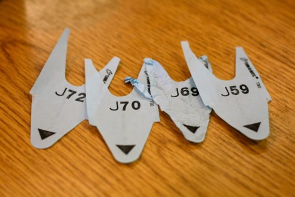

As shown above, we performed a query and set its return to a variable we called
promise. Of course we could have called the variable anything, but we called
it that for clarity because that thing it returned was a Promise.
Under the hood, we are using the Bluebird Promise library
Overview
In brief Promises are a way clean up the callback stack and provide a way for programs to pass the flow off as it sees fit rather than trying to jam it all into a single callback function. It offers an inversion of control so the code requesting the asyncronous operation need not relinquish it.
In Programming
In more concrete terms, a Promise is an object that has callbacks which will be called when the asynchronous action finishes.
Those callbacks do not need to be set or determined at the time the Promise is formed, so they can be added on later.
This means that a program can ask for something that will take time (such as going off into the intarwebs to hit DynamoDB and return a result) and from that request receive in return a Promise to which it can attach callbacks which will be called when the network call returns and the object is ready for use.
Real World Counter-example - Restaurant Pager
For something like this which is rather complex, I prefer a real world tangible example, or in this case a counter-example.
What follows is an example of a Callback and not a promise.
Imagine one of those flashy pagers that some restaurants will give you when they have a long wait for a table.

You no longer have to stand and wait in a line, you can take that pager, go do something else, and eventually the pager will flash and vibrate you to alert you that your table is ready.
So this is already better than the blocking request most other systems use exclusively to handle the time spent waiting for a response.
This pager is the more analogous to a Callback in Node. You had to tell the maître d' up front that you wanted a table and for how many and all that.
The restaurant in this situation holds the control. You have to give them your request up front and when they're ready they call you and you get what you asked for at the time they gave you the pager. If you changed your mind between the time you were handed the pager and the time you're called you're out of luck.
But what if you wanted to invert that control?
What if you could say to them, I will want something when you can handle me, I'm not sure exactly what I'll want, but I can take my time figuring it out because you're busy anyway.
Real World Example - Deli
For a real world example of a Promise, think of a deli.
In a deli, you grab a slip of paper which represents a Promise that when they have capacity, one of the workers will serve you.

You don't have to tell them what you want up front. You could change your mind in the time between when you pulled that number, or you could ignore it completely when the number came up, or you could pass it off to a friend who could do what they'd like when the number comes up.
The applications and benefits of Promises in JavaScript may not be immediately noticeable but there are many and a lot of people are really excited about Promises.
You can certainly count me, the author of this library, among those who are excited :)
Learn More
If you want to learn more about Promises and async JavaScript programming
generally I strongly recommend the book Async JavaScript: Build More Responsive Apps with Less Code
by Trevor Burnham.
It does a fantastic job of explaining a lot of async JavaScript concepts and covers Promises in great detail in Chapter 3.
Code!
Enough of the Jibber Jabber though, let's see an example:
// Get a promise back from the query command
var promise = users.find('victorquinn');
// Tell the promise what we want to do when it gets data back from DynamoDB
promise.then(function(user) {
// Not doing much useful here, but you get the point, now we have the
// user object so we can do cool things with it.
console.log(user.first);
});
Above we just told the Promise what to do when it got data back immediately but we could have passed that promise off to some other method and it could have added that.
We also could have done other neat things with the Promise like chaining, error handling, and more, but that's outside the scope of this brief intro to Dynasty.
Callbacks are cool too though!
Also worth noting, Dynasty also works fine with traditional callbacks too! So it's perfectly valid to do the same thing we did above as follows:
// Supply a traditional node callback as the last argument to specify what
// we want to do when we get a response from DynamoDB
users.find('victorquinn', function(err, user) {
// Not doing much useful here, but you get the point, now we have the
// user object so we can do cool things with it.
console.log(user.first);
});
Though it may seem this way, this section wasn't created to hate on callbacks, but rather to espouse the glory of Promises which the aws sdk did not support when this module was written. I think they've since adopted them too so some of this evangelism is a bit outdated/unnecessary but at the time it was a really novel feature/benefit!